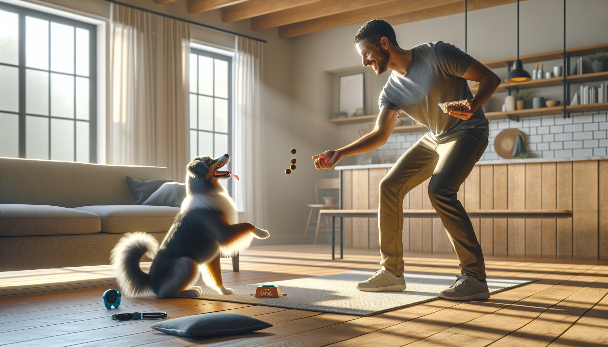

If you have ever felt like dog training needs hours of your day, a perfect schedule, or endless patience, here is the good news: it does not. In fact, one of the most effective ways to train a dog is with short, consistent practice. A focused 15-minute daily training routine can improve attention, manners, impulse control, confidence, and your relationship with your dog faster than occasional long sessions ever will.
This approach works for energetic puppies, newly adopted rescue dogs, and adult dogs who simply need better habits. It is also supported by what we know about animal learning. Dogs learn best through repetition, clarity, and reinforcement. Short sessions reduce frustration, keep motivation high, and make it easier for your dog to succeed.
Below, you will find a simple science-backed routine you can start today. It is flexible, realistic, and designed for real life. You do not need special equipment, a big backyard, or prior training experience. You just need 15 minutes, a few treats, and a commitment to showing up every day.
Consistency matters more than intensity in dog training. Dogs do not generalize behaviors automatically, which means they need repeated practice in manageable doses. A daily habit helps your dog understand what earns rewards and what is expected in common situations.
Short sessions also protect your dog from mental fatigue. Many behavior problems are not caused by stubbornness. They happen because the dog is overexcited, confused, under-rewarded, or asked to work for too long. Fifteen minutes is enough time to make progress while keeping training upbeat and productive.
There is another benefit: it helps the human stay consistent too. New puppy parents and rescue adopters often get overwhelmed by conflicting advice. A simple routine removes guesswork. Instead of wondering what to work on, you follow a repeatable structure that builds foundational skills day by day.
Keep your setup simple. The goal is to make training easy enough that you actually do it every day. Use small, soft treats your dog can eat quickly. For some dogs, kibble works in low-distraction environments. For puppies, rescues, or easily distracted dogs, higher-value rewards like tiny pieces of chicken or cheese may work better.
You may also want a clicker if you already know how to use one, but it is not required. A marker word like “yes” works well too. Your marker tells your dog the exact moment they did the right thing, followed immediately by a reward.
Choose a quiet location at first, such as your living room, kitchen, hallway, or backyard. As your dog improves, you can gradually practice in more distracting places.
Most importantly, start with realistic expectations. Transformation does not come from one perfect session. It comes from hundreds of small wins.
This routine is divided into five 3-minute blocks. That structure keeps things moving and helps you cover the most important life skills without overwhelming your dog.
That is it. No marathon drills. No complicated sequences. Just a balanced daily routine that teaches your dog to focus, think, and respond.
The same framework works across life stages, but your expectations should match the dog in front of you.
For puppies: Keep sessions extra short within the 15-minute window. You might do 30 to 60 seconds of work, then a quick play break, then resume. Focus on name response, handling, potty routine support, chew toy redirection, and calmness. Puppies have short attention spans, so success means lots of tiny wins.
For rescue adopters: Prioritize safety, trust, and predictability. A newly adopted dog may still be decompressing and may not be ready for too much pressure. Use gentle reinforcement, clear patterns, and low-distraction environments. Confidence-building matters as much as obedience.
For adult dogs: Build on what they know, but do not assume they fully understand cues in every context. Many adult dogs know behaviors at home but not outside. Practice in easy settings first, then increase difficulty gradually.
In all cases, remember that behavior is influenced by stress, sleep, exercise, health, and environment. If your dog suddenly struggles, it does not always mean they are being difficult. They may be tired, overstimulated, confused, or physically uncomfortable.
A routine is only as good as the training principles behind it. These guidelines are what turn 15 minutes into real progress.
Positive reinforcement is not permissive. It is precise. It teaches your dog what to do instead of relying on fear or force. That creates stronger learning and a better relationship.
Many dog owners are closer to success than they realize. A few small changes can make training much more effective.
If you hit a plateau, simplify the exercise, reduce distractions, and return to easier wins. Progress is rarely perfectly linear.
With daily practice, many owners notice early changes within one to two weeks. Dogs often become more responsive, more attentive, and easier to redirect. Over a month, you may see better leash manners, faster responses to cues, improved settling, and fewer impulsive behaviors.
That said, every dog is different. A confident adult dog with prior training may progress quickly. A fearful rescue, adolescent dog, or high-energy puppy may need more time and support. The goal is not perfection in 15 minutes. The goal is momentum.
Think of this routine as daily education for your dog. Just as people learn through regular practice, dogs build reliable habits through repetition and reinforcement. The small investment compounds.
And perhaps the biggest transformation is not just in behavior. It is in communication. When your dog understands how to succeed and trusts that you will guide them clearly, everyday life becomes easier for both of you.
The best dog training routine is not the most complicated one. It is the one you can do consistently. A 15-minute daily training routine works because it is practical, science-backed, and powerful enough to build real-life skills over time. Whether you are raising a puppy, helping a rescue settle in, or improving manners with an adult dog, these short sessions can transform behavior one repetition at a time.
Start today. Keep it simple. Reward generously. Celebrate progress. Your dog does not need perfection from you. They need clarity, consistency, and a reason to keep trying.
Get our full Dog Training eBook series — new titles added weekly.